10 detalles que no viste en la mirada extendida
Revisamos el metraje oficial de la mirada extendida de Grand Theft Auto VI plano a plano para encontrar diez detalles que pasan desapercibidos a simple vista.


Canal de GTA VI en español
Revisamos el metraje oficial de la mirada extendida de Grand Theft Auto VI plano a plano para encontrar diez detalles que pasan desapercibidos a simple vista.
 8 vídeos
8 vídeos 3 vídeos
3 vídeos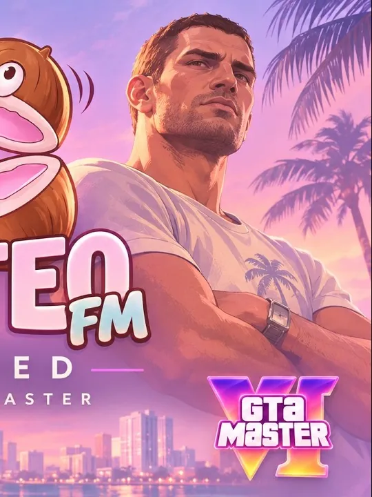
6 vídeos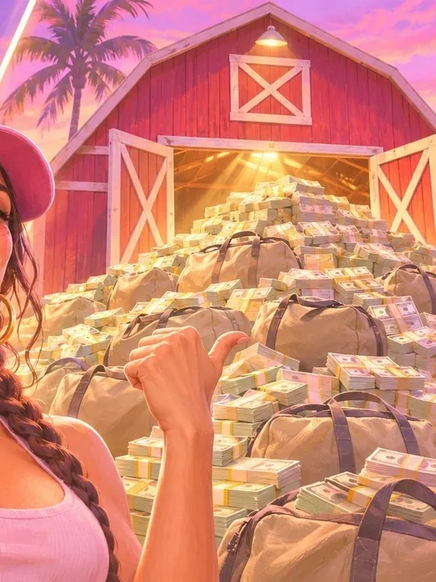
9 vídeos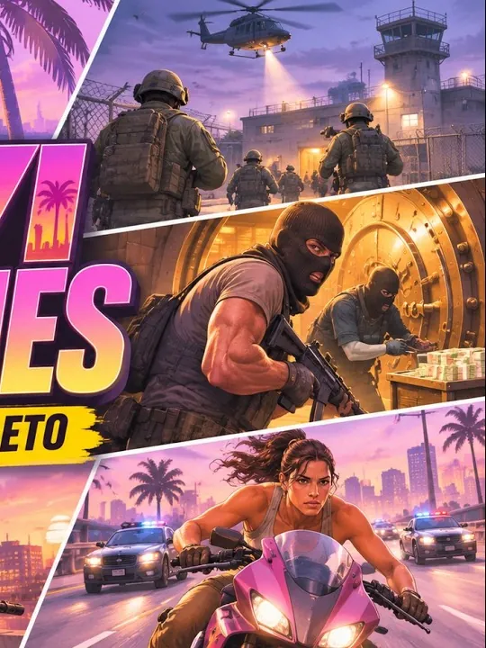
2 vídeos 4 vídeos
4 vídeos 1 vídeo
1 vídeo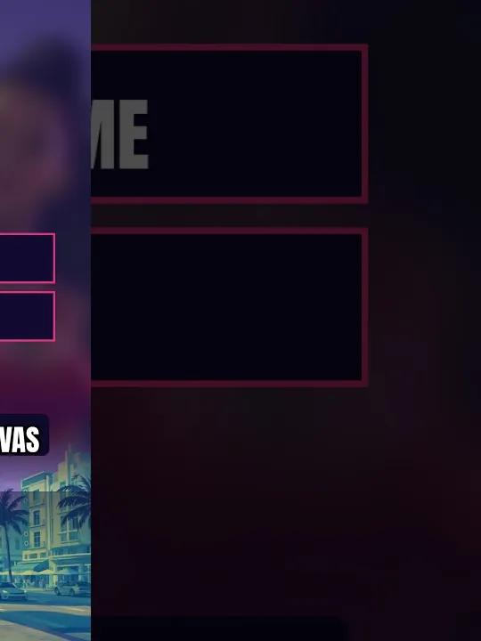
11 vídeos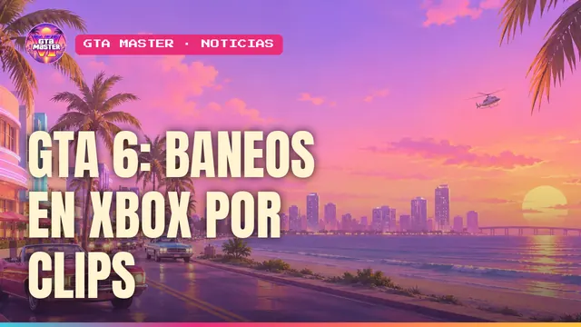
GTA 6 baneo en Xbox: jugadores denuncian suspensiones de dos días por clips subidos solos. Qué se sabe, el caso de PSN y cómo desactivar la subida.

GTA 6 PC: la ficha de GTA VI en Steam no es de Rockstar y SteamDB la marca como sospechosa. Por qué es falsa, qué riesgos hay y cuándo sale en PC.
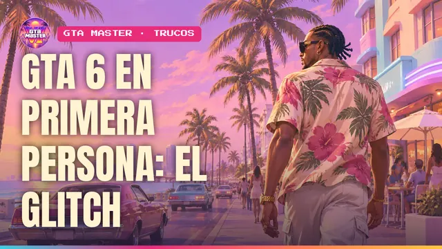
GTA 6 primera persona: el juego no tiene modo oficial, pero un glitch de cámara lo activa en PS5 y Xbox. Te explicamos el truco paso a paso y sus riesgos.

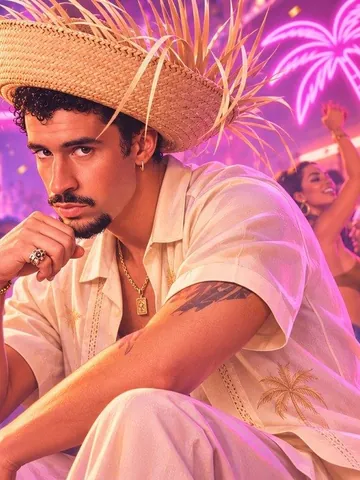
Latino modernoLatino moderno · Reguetón, bachata, merengue y dembow.
Presentan El Martillo y La Gata (voces de Bad Bunny y RaiNao)
Ver vídeo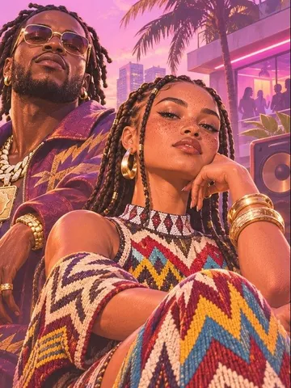
Afro y amapianoAfro y amapiano · Amapiano, clásicos africanos y 3-step.
Presentan Burna y Palmsy (voces de Burna Boy y Palms Trax)
Ver vídeoPop · La emisora de Vice City vuelve con el pop de hoy.
Presentan Robyn y Alex (voces de Robyn y Alex Consani)
Más sobre la músicaCountry · Country rebelde para las carreteras de Leonida.
Presentan MW y Delta Dawne (voces de Morgan Wallen y Lana Del Rey)
Más sobre la músicaMetal · Heavy metal clásico, sin concesiones.
Presentan DJ Kerry y DJ Tom (voces de Kerry King y Tom Araya (Slayer))
Más sobre la músicaRap del sur · Clásicos del rap y el hip-hop del sur.
Presentan Trick y Trina (voces de Trick Daddy y Trina)
Más sobre la músicaRockstar ha confirmado 6 de momento. Añadiremos el resto en cuanto se publique la lista completa.
Vídeos de músicaEmisoras y presentadores confirmados por Rockstar Games el 8 de octubre de 2026.
Jason y Lucia llevan la historia, pero Leonida está llena de secundarios. Este es todo el reparto confirmado hasta hoy.


Protagonista. Exmilitar que acaba de nuevo en el mundo del crimen, trabajando para traficantes en los Cayos de Leonida.
Ver el análisis
Protagonista. Dispuesta a cambiar de vida después de pasar por la Penitenciaría de Leonida.
Ver el análisis

Atracador de bancos veterano que siempre busca un golpe mayor.
Ver la ficha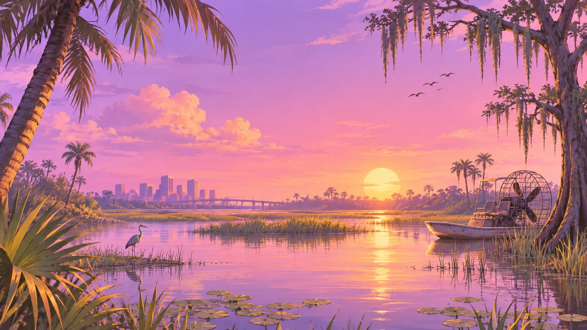
Contrabandista de la vieja escuela de los Cayos que todavía conserva sus contactos.
Ver el análisis
Leyenda local de Vice City: de la calle a empresario de éxito.
Ver el análisis

Amigo de Jason y socio de Brian. Un teórico de la conspiración que desconfía de todo.
Ver el análisis

Más buscavidas que gánster: quiere triunfar en la música.
Ver la ficha

Bae-Luxe y Roxy: de sus comienzos en la calle al éxito en las redes.
Ver la ficha
Un VIP de Megamundo que necesita algo más que protección.
Ver la ficha

Directora de operaciones de Megamundo, figura clave del mundo empresarial de Vice City.
Ver la fichaEl estado ficticio de GTA 6, inspirado en Florida, se divide en seis regiones. De los rascacielos de Vice City a los pantanos de Grassrivers.

La gran ciudad de Leonida: playa, neón, coches de lujo y vida nocturna hasta el amanecer.
Vídeo: Vice City de día vs de noche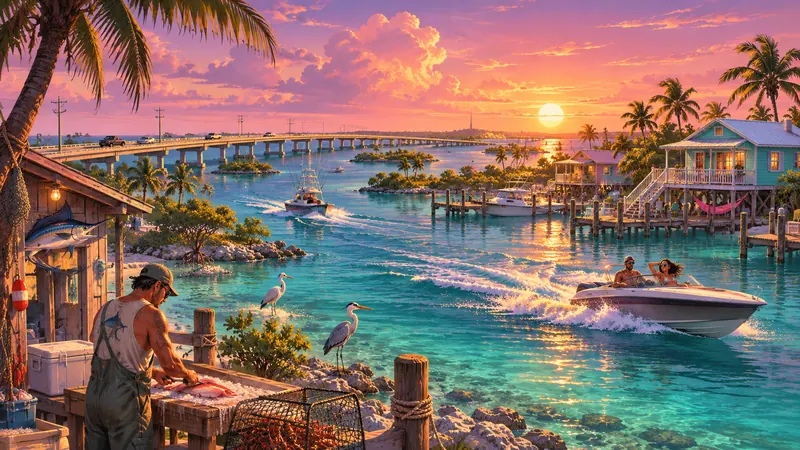
Islas, puentes sobre aguas turquesa, embarcaderos y personajes como Cal Hampton.
Vídeo: Quién es Cal Hampton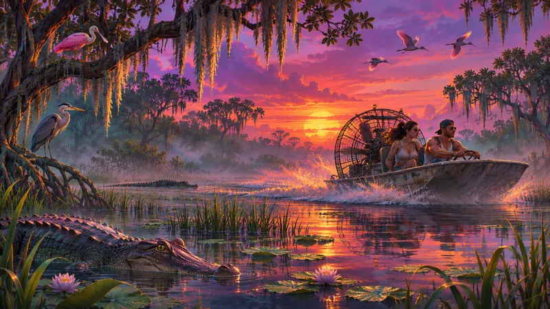
Pantanos con caimanes, manglares y hidrodeslizadores entre la niebla.
Vídeo: Los pantanos de GTA 6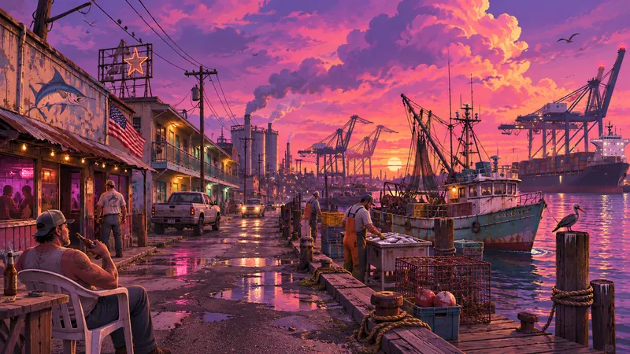
Grúas, pesqueros oxidados y bares de muelle en la zona portuaria e industrial.
Vídeo: Las 6 regiones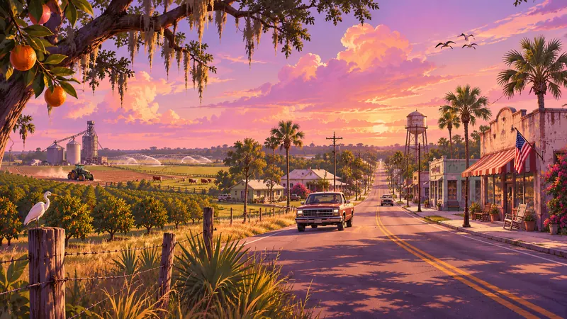
Naranjales, campos de cultivo y pueblos de carretera en el interior de Leonida.
Vídeo: Las 6 regiones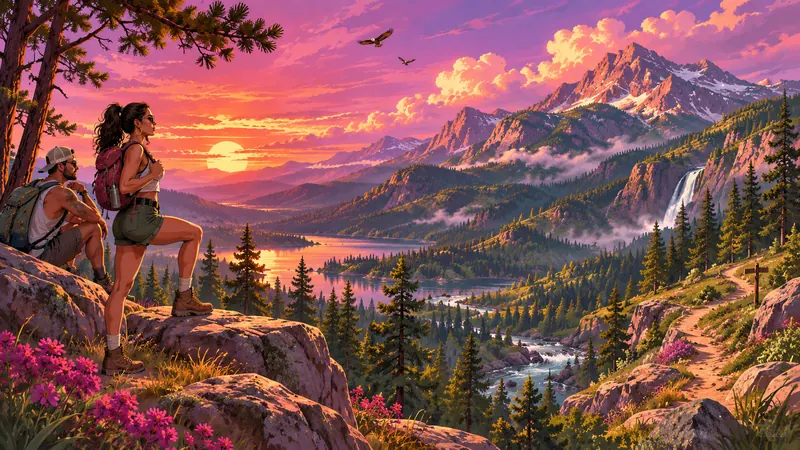
El parque nacional: montaña, bosque, lagos y rutas de senderismo.
Vídeo: Todo lo que podrás hacer
Disponible en PlayStation 5 y Xbox Series X|S desde las 00:00 del 19 de noviembre de 2026, hora peninsular española.
Ya a la ventaPS5 · Xbox Series X|SComprar en la web oficial de Rockstar Games
GTA 6 salió el jueves 19 de noviembre de 2026 en PlayStation 5 y Xbox Series X|S. En España se desbloqueó a las 00:00 del 19 de noviembre, hora peninsular, y ya está a la venta.
En España, la edición estándar cuesta 79,99 € y la Ultimate Edition 99,99 €. En Estados Unidos, 79,99 y 99,99 dólares.
No en el lanzamiento. Rockstar solo ha anunciado PS5 y Xbox Series X|S y no hay fecha para PC. Take-Two ha dicho que los jugadores de consola son su público principal.
Hasta 212 GB, según la consola. La precarga para las reservas digitales empezó el 10 de noviembre.
No. La caja incluye un código de descarga, así que hace falta el mismo espacio y conexión a Internet que en digital.
A 30 fps en todas las consolas, incluida PS5 Pro. Rockstar no ha confirmado un modo a 60 fps.
Unas 80 horas la historia con algunos objetivos opcionales, según Rob Nelson, de Rockstar North. Completarlo todo lleva bastante más.
Un 99 en Metacritic con 146 reseñas y un 99 en OpenCritic el día antes del lanzamiento, con dieces en IGN, GameSpot y Game Informer.
Jason Duval y Lucia Caminos, una pareja que se mete en el crimen de Leonida. Es la primera vez que un GTA principal tiene una protagonista.
En Leonida, un estado ficticio inspirado en Florida, con Vice City (inspirada en Miami) como gran ciudad. Según Rockstar North, Vice City es el doble de grande que Los Santos de GTA V.
Sí: 61, pero solo se desbloquean al terminar la historia y cada uno pide además un reto. Se introducen con el móvil del juego (arriba en la cruceta, L1 + R1 o LB + RB y la combinación) y desactivan trofeos, logros y guardado durante esa sesión.
Cocoteo FM, la emisora de música latina contemporánea, la presentan Bad Bunny y RaiNao, en los papeles de El Martillo y La Gata.
Un canal de YouTube en español dedicado a GTA 6: detalles que no viste, personajes, mapa, curiosidades y análisis hechos con material oficial de Rockstar, sin filtraciones. Es un canal de fans, no oficial.
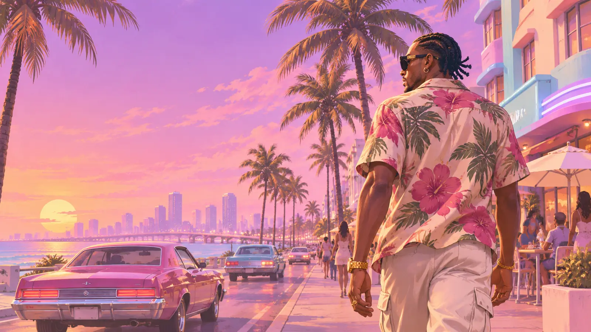